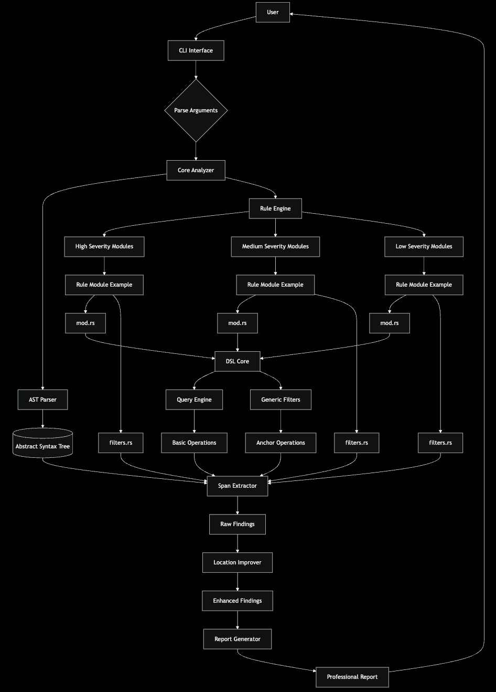
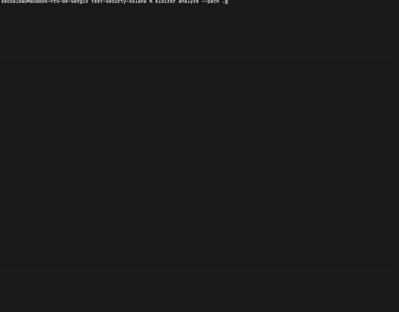

Static analysis for Solana smart contracts. Detect vulnerabilities, security issues, and code quality problems.
Built in Rust, Eloizer leverages abstract syntax tree (AST) analysis and pattern matching to identify common security vulnerabilities and anti-patterns specific to Solana programs.
Integrates seamlessly into CI/CD pipelines, allowing teams to catch critical issues early in the development cycle.
Detect vulnerabilities, code quality and security issues in your Solana/Anchor projects with 50+ built-in detectors.


See the Static Analyzer in action as it scans Solana smart contracts, identifying vulnerabilities and security issues in real-time.
The tool provides instant feedback with detailed reports, severity classifications, and actionable remediation guidance for each detected issue.
A systematic approach to static analysis
Analyzes Rust/Anchor code and generates AST representation
Runs 50+ specialized security detectors against the AST
Assigns severity levels (Critical, High, Medium, Low, Info) to each finding
Generates detailed reports with exact locations and remediation guidance
50+ built-in detectors covering common vulnerabilities, security anti-patterns, and code quality issues.
Written in Rust for maximum performance. Analyze entire codebases in seconds with parallel processing.
Support for any Solana architecture, ensuring maximum flexibility without framework limitations.
Technical reports with exact locations, severity levels, and remediation suggestions.
Create custom detectors and configure severity levels for your specific needs.
Easy integration with GitHub Actions, GitLab CI. Automated security checks on every commit.